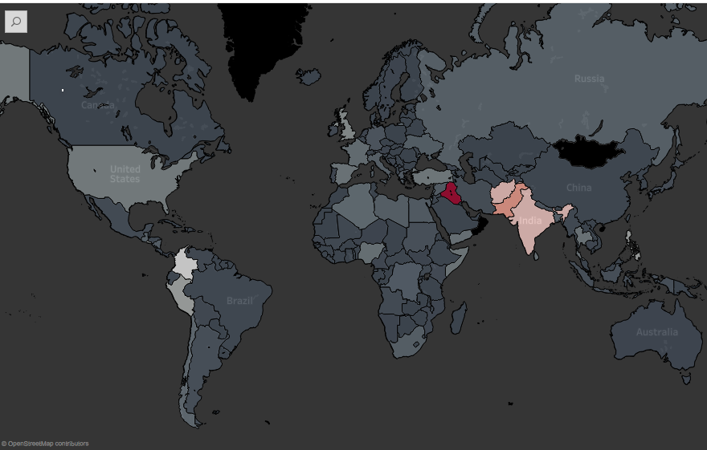
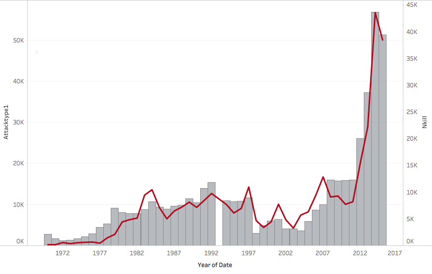
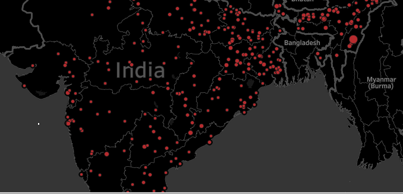

Bayesian Inference and Imputation
The Global Terrorism Database (GTD) is a product of several years of work collating, classifying, and recording terrorist attacks around the world from 1970 to 2015. It has undergone several ownership changes and is currently housed at the University of Maryland. Since its procurement, the team at UMD have developed standardized modes of collecting and recording information. However, because the database has traded hands so many times, a large amount of the pre-2011 data suffers from issues. Due to this, the database excludes information for incidents that occurred in 1993. This project involved two portions:
I used Bayesian inference to look at hostage barricade attacks in India and Pakistan post 2001. Narrowing my focus to these two populations translated to me working with a much smaller dataset, which meant that Bayesian analysis would be most fitting for the task. Unlike the frequentist approach, Bayesian inference does not assume a larger sample sizes in order to provide statistically viable results. The result of the inference showed that post 2001 hostage barricade attacks in India and Pakistan were statistically similar.
To impute the number of bombing attacks for 1993, I used a rolling mean to determine what values were likely. With this method, I took the rolling means for 1991 and 1992, as well as the means for 1994 and 1995. I then averaged them to arrive at my estimate of 1,417 bombing incidents.